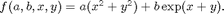

spset
Create/alter a sparse grid interpolationOPTIONS structure.
Syntax
spsetOPTIONS = spset('NAME1',VALUE1,'NAME2',VALUE2,...)OPTIONS = spset(OLDOPTS,'NAME1',VALUE1,...)OPTIONS = spset(OLDOPTS,NEWOPTS)
Description
spset with no input arguments displays all property names and their possible values.
OPTIONS = spset('NAME1',VALUE1,'NAME2',VALUE2,...) creates an options structure OPTIONS in which the named properties have the specified values. Any unspecified properties have default values. It is sufficient to type only the leading characters that uniquely identify the property. Case is ignored for property names.
OPTIONS = spset(OLDOPTS,'NAME1',VALUE1,...) alters an existing options structure OLDOPTS.
OPTIONS = spset(OLDOPTS,NEWOPTS) combines an existing options structure OLDOPTS with a new options structure NEWOPTS. Any new properties overwrite corresponding old properties.
Properties
| Property | Value {default} | Description |
|---|---|---|
GridType |
{Clenshaw-Curtis} | Maximum | NoBoundary | Chebyshev | Gauss-Patterson | Sparse grid type and basis functions to use by spvals. For an illustration of the grid types, run cmpgrids. |
RelTol |
positive scalar {1e-2} | A relative error tolerance that applies to all hierarchical
surpluses of the sparse grid representation. The grid is further refined until all hierarchical surpluses are less than max(RelTol*(max(fevalRange)-min(fevalRange)),AbsTol), with fevalRange containing all results evaluating FUN up to that point. |
AbsTol |
positive scalar {1e-6} | Absolute error tolerance, used by the error criterion stated under the property RelTol. |
Vectorized |
on | {off} | Indicates if FUN is available for vectorized evaluation. Vectorized coding of FUN can significantly reduce the computation time used by spvals. For an example using a vectorized function, please see spdemo. |
MinDepth |
integer {2} | Minimum interpolation depth, specifies the minimum number of hierarchical interpolation levels N to compute.Remark: MinDepth has no effect if the dimension-adaptive grid refinement is switched on. An example is provided below. |
MaxDepth |
integer {8} | Maximum interpolation depth, specifies the maximum number of hierarchical interpolation levels N to compute.Remark: Since version 5.0, MaxDepth also applies to the dimension-adaptive algorithm. If MaxDepth is reached with respect to a coordinate direction, this direction is no longer refined further. |
VariablePositions |
1xD vector {[]} |
Position of the ranges in the argument list when FUN is evaluated. By setting VariablePositions, spvals will evaluate FUN with respect to some of its input parameters, but not necessarily the first D ones. The actual position is assigned by providing the number in the input argument list of the function FUN. This number must be provided for each interpolation dimension. Therefore, the value of VariablePositions must be a 1xD array. An example is provided below. |
NumberOfOutputs |
integer {1} | If FUN produces multiple outputs (where all must be scalar!), indicate this here to perform the sparse grid computation for many output variables at once. Also see the example spdemovarout. |
PrevResults |
struct {[]} | Previous sparse grid data. An existing result structure obtained from spvals may be provided to further refine an existing sparse grid. An example is provided below. |
FunctionArgType |
{list} | vector | Indicates whether the objective function takes the input parameters as a comma-separated list (default) or as a vector. |
KeepFunctionValues |
{off} | on | If this parameter is set, a structure field fvals is
returned, containing a cell array with the function values at the sparse grid points. |
KeepGrid |
{off} | on | If this parameter is set, a structure field grid is
returned, containing a cell array with the the sparse grid points. |
DimensionAdaptive |
{off} | on | Dimension-adaptive grids try to adaptively find important dimensions and adjust the sparse grid structure accordingly. Especially in case of higher-dimensional problems, a dimension-adaptive strategy can significantly reduce the number of support nodes required to achieve a good interpolant. |
DimadaptDegree |
positive scalar {0.9} | Fine-tuning parameter to alter the degree of dimensional adaptivity. A value of 1 places strong emphasis on the error estimates, and thus leads to strong dimensional adaptivity. A value of 0 disregards the error estimates, and constructs a conventional sparse grid based on the amount of work involved. |
DegreeStrategy |
{balancing} | depth | Strategy for the degree of dimensional adaptivity. The balancing strategy balances the number of grid points generated according to the greedy, error estimate-based refine ment rule compared to the number of points generated by the conventional (regular) sparse grid refinement rule. I.e., a DimadaptDegree value of 0.9 would mean that around 90% of the grid points are generated by the error estimate-based rule, and the remaining points are selected according to the regular rule. See Advanced Topics, Degree of Dimensional Adaptivity for additional information.The depth strategy makes sure that the maximum level depth reached by the error estimate-based refinement in one dimension does not get too deep compared to the depth reached in the other dimensions. This strategy is the one used prior to version 5.1 of the toolbox, and is described in [3, ch. 3]. This approach is still supported but not the default strategy. |
MinPoints |
integer {100} | This parameter only applies to dimension-adaptive sparse grids, and indicates the minimum number of support nodes (i.e. function evaluations to perform). An example is provided below. |
MaxPoints |
integer {10000} | This parameter only applies to dimension-adaptive sparse grids. The dimension-adaptive algorithm is aborted once the function evaluation count exceeds this number. |
SparseIndices |
{auto} | off | on | Manually turn the efficient sparse storage scheme (new feature since version 3.0) of the multi-index arrays on or off. The default switch auto uses the new scheme for the ClenshawCurtis, the Chebyshev, and the Gauss-Patterson grid, and the old (full) storage scheme from version 2.x for the Maximum and the NoBoundary grid (the sparse grid storage scheme is not supported for these two grid types). |
DropTol |
1x2 vector | {auto} | off |
During the sparse grid construction progress, the spvals algorithm may add subgrids with hierarchical surpluses that are all close to zero or of negligible magnitude compared to the surpluses of other sub-grids. In particular, this occurs when additive structure is present in the objective function. To increase the performance of the spinterp algorithm, you may run the sppurge algorithm that marks subgrids to be neglected where all hierarchical surpluses w are less than max(relDropTol*(max(fevalRange)-min(fevalRange),absDropTol)). You may specify the absolute and the relative drop tolerance as a vector [absDropTol, relDropTol], or turn it off completely (= behavior of version 3.0 and earlier). The switch auto uses the values absDropTol = 0, relDropTol = 100*eps, that is, by default, only a relative drop tolerance is used.
|
EnableDCT |
{on} | off | Enables/disables the DCT-based algorithm when constructing the Chebyshev-Gauss-Lobatto type sparse grid. |
Examples
Since spset offers many possibilities to alter the behavior of the sparse grid interpolant construction, we provide several typical examples in the following.
Example 1: Basic usage of spset
As an example for a typical task requiring the modification of the sparse grid options structure. we construct an interpolant with a specified number of function evaluations. The dimension-adaptive approach permits to do this in an elegant manner. The following code constructs an interpolant with about 100 nodes, since both MinPoints as well as MaxPoints are set to 100.
f = @(x,y) exp(x+y); z = spvals(f, 2, [], spset('DimensionAdaptive', 'on', ... 'MinPoints', 100, 'MaxPoints', 100))
z =
vals: {[129x1 double]}
gridType: 'Clenshaw-Curtis'
d: 2
range: []
estRelError: 8.3520e-04
estAbsError: 0.0053
fevalRange: [1 7.3891]
minGridVal: [0 0]
maxGridVal: [1 1]
nPoints: 129
fevalTime: 0.0546
surplusCompTime: 0.0058
indices: [1x1 struct]
maxLevel: [5 5]
activeIndices: [5x1 uint32]
activeIndices2: [13x1 uint32]
E: [1x19 double]
G: [19x1 double]
G2: [19x1 double]
maxSetPoints: 5
dimAdapt: 1
Note that the MinPoints and MaxPoints properties only work for dimension-adaptive grids. If we want to construct a non-adaptive grid of a certain depth, the MinDepth and MaxDepth options can be used. Recall that the number of points of a regular sparse grid can be determined a priori with the spdim function.
n = 4; d=2; spdim(4,2); z = spvals(f, 2, [], spset('MinDepth', n, 'MaxDepth', n))
z =
vals: {[65x1 double]}
gridType: 'Clenshaw-Curtis'
d: 2
range: []
maxLevel: 4
estRelError: 0.0031
estAbsError: 0.0201
fevalRange: [1 7.3891]
minGridVal: [0 0]
maxGridVal: [1 1]
nPoints: 65
fevalTime: 0.1066
surplusCompTime: 0.0029
indices: [1x1 struct]
Example 2: Providing previous results
After computing an interpolant with a certain accuracy, it is often required to improve it further later on. Due to the hierarchical construction scheme, the previous results are not lost but can be passed to spvals for further refinement, as the following code illustrates.
f = @(x,y) exp(x+y); z = []; for n = 1:4 z = spvals(f, 2, [], spset('MinDepth', n, 'MaxDepth', n, ... 'PrevResults', z)); disp(['n = ' num2str(z.maxLevel) ', estimated rel. error: ', ... num2str(z.estRelError)]); end
Warning: MaxDepth = 1 reached before accuracies
RelTol = 0.01 or AbsTol = 1e-06 were achieved.
The current estimated relative accuracy is 0.62246.
n = 1, estimated rel. error: 0.62246
Warning: MaxDepth = 2 reached before accuracies
RelTol = 0.01 or AbsTol = 1e-06 were achieved.
The current estimated relative accuracy is 0.17905.
n = 2, estimated rel. error: 0.17905
Warning: MaxDepth = 3 reached before accuracies
RelTol = 0.01 or AbsTol = 1e-06 were achieved.
The current estimated relative accuracy is 0.011133.
n = 3, estimated rel. error: 0.011133
n = 4, estimated rel. error: 0.0031415
Example 3: Using the VariablePositions property
Consider the case of a function of four parameters, e.g.

Suppose that the parameters a and b are fixed to a = 0.5 and b = 0.2, and we wish to compute an approximation of f for x, y in [0,1]^2. The default syntax of spvals would require the interpolated parameters to appear at the start of the argument list, i.e. would require an argument list (x,y,a,b) to enable the call spvals(f,2,[],[],a,b).
By using VariablePositions, we can use the function as it is defined above, as the following code shows.
f = inline('a.*(x.^2+y.^2) + b.*exp(x+y)','a','b','x','y') a = 0.5; b = 0.2; options = spset('VariablePositions', [3 4]); z = spvals(f,2,[],options,a,b)
f =
Inline function:
f(a,b,x,y) = a.*(x.^2+y.^2) + b.*exp(x+y)
z =
vals: {[29x1 double]}
gridType: 'Clenshaw-Curtis'
d: 2
range: []
maxLevel: 3
estRelError: 0.0062
estAbsError: 0.0142
fevalRange: [0.2000 2.4778]
minGridVal: [0 0]
maxGridVal: [1 1]
nPoints: 29
fevalTime: 0.0508
surplusCompTime: 0.0015
indices: [1x1 struct]
Since the interpolation problem is two-dimensional, we assign a 1x2 vector to the VariablePositions property, indicating that the first parameter an interpolation of which is required is located at position 3 of the argument list of f, and the second one at position 4. Note that since the function f takes four input paramters, the remaining parameters are appended to the argument list of spvals after the options argument.
See Also
spget,
spvals.